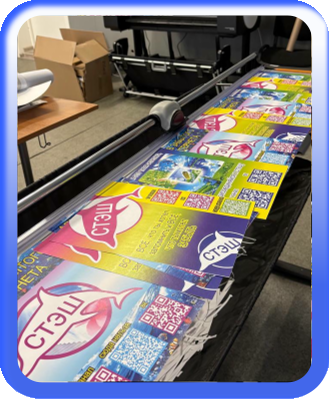
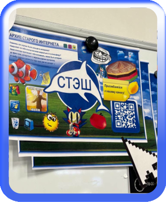
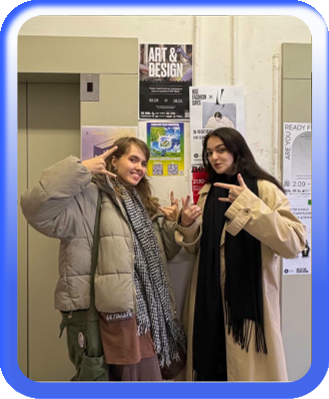
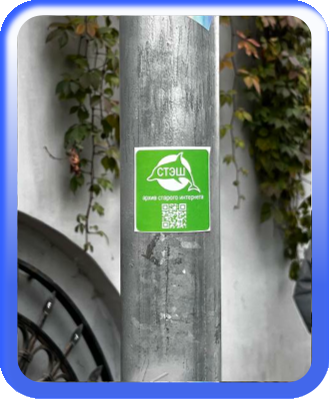
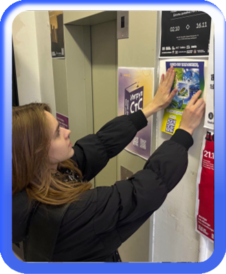

архив старого интернета. место, в котором собраны артефакты прошлого: сайты, культовые моменты, интерфейсы, игры, гифки, мемы и многое другое. мы собираем фрагменты прошлого и создаем из них портал в мир забытого интернета, чтобы вспомнить, какой была сеть до фильтров, алгоритмов и перенасыщения контентом, и чтобы немного заглянуть туда, куда уже не заходят.

Архив — это сердце нашего проекта и место, где можно пошуршать в разных артефактах старого интернета. В архиве мы собираем забытые мемы, странные челленджи тех времен, взломы и забытые сайты, сохраняя дух эпохи 2000-х. Каждый элемент служит маленьким фрагментом цифровой истории, который вы больше нигде не увидите. Архив позволяет путешествовать по прошлому интернету и сети, открывая случайные находки или забытые ностальгические мотивы, с которыми вы уже сталкивались в старой сети интернет.






